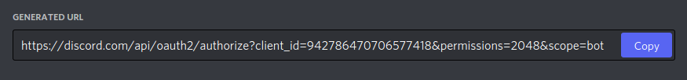
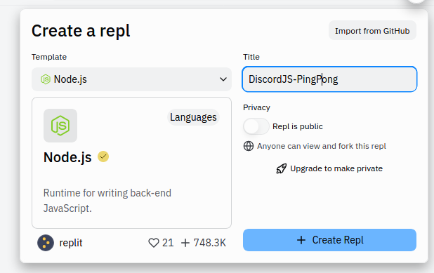

DiscordJS
Connais-tu Discord? Et les bots Discord? On peut les programmer en JavaScript grâce à la librarie DiscordJS!
Commencer !Connais-tu Discord? Et les bots Discord? On peut les programmer en JavaScript grâce à la librarie DiscordJS!
Commencer !Avant de commencer ce défi, il te faut un certain nombre de comptes
Si tu as complété ces trois tâches, tu peux passer à l'étape 2.
On va créer notre bot Discord! Pour ce faire, on doit aller sur la partie développeur de Discord. Tu peux aussi trouver cette partie en allant tout en bas du site Discord et appuyer sur "Developers".
Sois sûr.e d'être dans la partie "Applications". Ici, tu peux choisir "New Application" dans le coin supérieur à droite et donner un nom a ton application. Tu peux l'appeler comme tu veux.
Tu peux alors voir toutes les informations de ton application et lui ajouter une icône ainsi qu'une description, si tu le souhaites. Une fois que c'est fait, n'oublie pas de sauvegarder en appuyant sur "Save Changes" en bas de l'écran.

Pour que ton application devienne agisse comme un bot, il faut que tu ailles dans la section "Bot":
Ici, tu peux cliquer sur "Add Bot" pour lier un bot à ton application. Tu devras confirmer en cliquant sur "Yes, do it!". Lorsque c'est fait, cherche l'option "Public Bot" et désactive-la.

On va maintenant ajouter ce bot au serveur Techies. Dans la section "OAuth2/URL Generator", clique sur la case "bot" des options "SCOPES":
De nouvelles options "BOT PERMISSIONS" apparaissent en bas. Coche sur "Send Messages" pour permettre à ton bot d'envoyer des messages. Ensuite appuie sur "Copy" pour copier le lien de ton bot.
...
Colle le lien de ton bot dans un nouvel onglet de ton navigateur (Chrome, Firefox, etc.). Ici, on te demandera de sélectionner un serveur sur lequel ajouter ton bot. Sélectionne le serveur Techies Lab.

Tu devrais voir ton bot apparaître sur le serveur! Il ne fait rien pour l'instant, mais il est là!

On va commencer à coder le bot. Connecte-toi à ton compte repl.it. Une fois sur la page, clique sur "+ Create" pour créer un nouveau projet. Comme langage, choisis "Node.js" et donne lui un nom adapté.

...
Tu peux maintenant écrire du code dans la partie du milieu de l'écran. Contrairement aux projets p5.js, rien n'est écrit au départ, on va devoir tout écrire nous-mêmes!
Pour commencer, écris ces deux lignes suivantes:
const Discord = require('discord.js');
const bot = new Discord.Client();
La première ligne importe la librairie "discord.js", qui est importante pour pouvoir coder un bot Discord. La seconde ligne crée un client Discord, qui va être l'intermédiaire entre notre code JavaScript et notre serveur Discord. Ce client est un peu comme la représentation du bot dans notre code, et on l'appelle donc bot.
Appuie sur le bouton "Run" en haut au milieu de l'écran. Repl.it va alors installer la librairie "discord.js", ceci pourrait prendre un peu de temps. Le résultat dans la console est un message d'erreur:
Par défaut, repl.it installe la dernière version (v13) de la librairie discord.js. Malheureusement, cette version n'est pas compatible avec la version de node (une autre librairie utilisée pour que notre projet JavaScript fonctionne).
Pour régler ce problème, on va utiliser une version plus "ancienne" de discord.js, à savoir la version 12.5.1. Tu as peut-être remarqué qu'après avoir cliqué sur le bouton "Run", deux nouveaux fichiers étaient apparus dans ton projet:
Dans le fichier package.json, une des lignes indique la version de la librairie discord.js qui est installée dans ton projet. Dans mon cas, c'est la version 13.6.0:
Pour rétrograder la version, il suffit de remplacer la version par celle souhaitée: "discord.js": "^12.5.1"
Clique à nouveau sur le bouton "Run". Si tu vois
Hint: hit control+c anytime to enter REPL.
tu sais que ça a marché!
On va maintenant activer le bot, c'est-à-dire le mettre en route. Pour ce faire, on va écouter le client (notre appli Discord) jusqu'à ce qu'elle nous dise qu'elle est prête (ready en anglais). Quand l'appli est prête, on va exécuter la fonction, qui est passée en second paramètre.
bot.on('ready', function(){
console.log('Connecté');
});
Essaie de lancer ce code. Sais-tu pourquoi on ne voit pas "Connecté" s'afficher dans la console? C'est qu'on a pas précisé avec quel bot on voulait travailler! Pour cela, on a besoin du token (ou jeton d'identification) de notre bot.
Va sur le portail développeur de Discord, puis sur ton application créée à l'étape 2. Dans la section "Bot", cherche la partie "Token":

Appuie sur "Copy" pour copier ton token! On en a besoin pour se connecter au bot.
bot.login('Ton Token');
Ajoute cette ligne après les deux premières lignes de ton projet et n'oublie pas de remplacer "Ton Token" par le token que tu viens de copier.
Lorsque tu lances le code, tu devrais voir "Connecté" s'afficher dans la console!

On va maintenant envoyer des messages avec notre bot. Le bot qu'on va créer est très simple et sans but réel autre qu'éducatif: À chaque fois qu'un utilisateur envoie "Ping", le Bot répondra "Pong".
Pour ce faire, on doit coder une façon de savoir si un message arrive ou non. On doit écouter si un signal arrive! Le signal en question est 'message'. Te souviens tu comment faire?
bot.on('message', ...);
On doit alors remplacer les '...' par une fonction! Faisons cela!
bot.on('message', function() {
// ...
});
Dans le cas où on écoutait pour le signal 'ready', on avait une fonction comme celle ci. Mais ici on écoute pour le signal 'message', et donc un message vient avec le signal. La fonction prend donc un argument!
bot.on('message', function(msg) {
// ...
});
Il ne nous reste qu'à vérifier si le contenu du message vaut "Ping", et dans ce cas on va répondre "Pong"!
Pour accéder au contenu du message, on utilise msg.content. Donc pour vérifier si le contenu vaut "Ping", on fait le suivant:
if(msg.content === "Ping") {
// ...
}
Pour envoyer un message, on a deux options. Je te recommande d'essayer les deux et de déterminer par toi même lequel tu préfères.
Pour répondre à l'utilisateur qui a envoyé le message, on utilise msg.reply()
msg.reply("Pong");
Pour simplement envoyer un message dans le même canal que l'utilisateur qui a envoyé le premier message, on utilise msg.channel.send()
msg.channel.send("Pong");
Bravo! Ton bot est maintenant fonctionnel! Voici une liste de challenges si tu as fini à l'avance:
switch en JavaScript. Recherche "switch javascript" sur Google et essaie de comprendre pourquoi c'est utile ici!